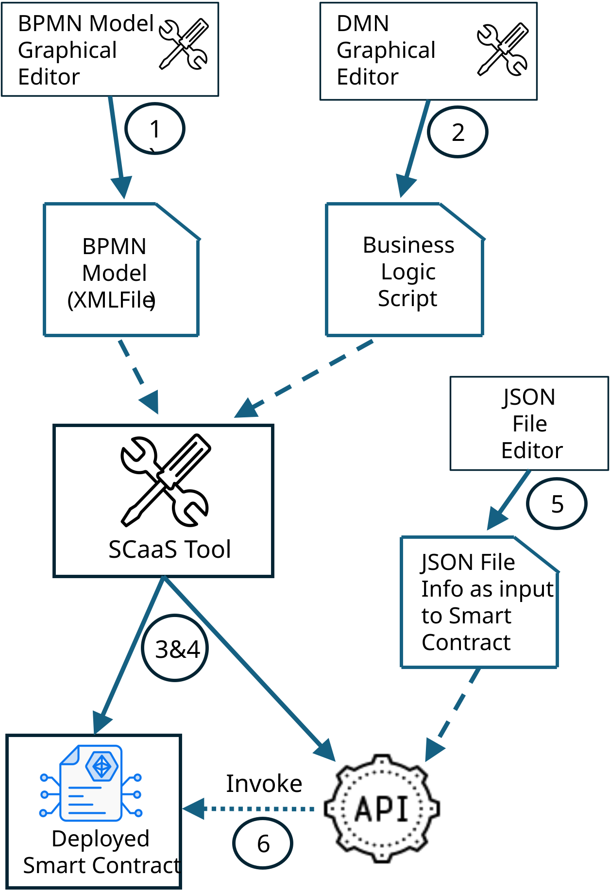

Exec Synopsis
Dramatically reduce cost and time for smart contract development
- Business Analyst (BA) uses the following six steps to create a model, representing
the trade activity processes and their business logic, and then transform the model
into a smart contract deployed on a target blockchain:
- Uses a graphical diagramming tool to create a model of the business processes expressed using the Business Process Management Notation (BPMN). The model is stored in an XML file.
- Uses a graphical diagraming tool to create a model of the business logic for the business processses created in the previous step.
- BA uses the SCaaS tool (aka TABS tool in research papers) to
- Transform the BPMN model to smart contracts and API
- Deploy the smart contract(s) and prepare API
- BA prepares information necessary for the trading activity and starts the trading activity.
To achieve that, BA performs the following steps:
- Uses a JSON or text editor to create JSON files that contain information, such as customs or insurance documents, necessary for the trading activity.
- Tells SCaaS to initiate the trade activity by invoking the API while providing it with appropriate information contained in the JSON files. API methods invoke the smart contracdt methods with approprite information.
- Software developer task is greatly reduced as the SCaaS tool prepares the smart contract(s) and API.
- If the business logic is described by BA using a DMN model, then the software developer assistance is not needed.

Privacy
- Trade activity may include several participants, such as shippers, insurers, ports, customs, and auditors, who deal with different aspects of the trade activity. SCaaS tool provides privacy by allowing a participant to access only information pertaining to their aspect of the trade activity.
Portability
- Smart contract can be generated for various blockchains. Portability is facilitated by representing the collaboration activities using multi-modal modeling at a high level of abstraction and then transforming the model into a smart contract(s) and deploying it on the target blockchain. Currently, Ethereum and Hyperledger Fabric blockchains are supported for automated deployment.
Nested multi-step transaction
- A blockchain transaction is defined to contain writes to the ledger made by an execution of any smart contract method. However, a trade activity typically includes collaboration of several actors, such as shippers, insurers and customs, each one executing its smart contract method(s). Such a collaboration frequetnly needs to be synchronized and treated as an atomic activity that either completes all of its activities successfully or does not leave any trace of its partially executed activities.
- To support such multi-step atomic activities, we developed the concept of a multi-step transaction spanning execution of several smart contract methods. Our methodology provides an option to the BPMN modeler to identify which activities should be defined as an atomic transaction and provide for automated generation of a transaction mechanism that enforces transactional properties. Thus, to use multi-step transaction, all that needs to be done is to identify methods that belong to each multi-step transaction, while the transaction mechanism is automatically generated by the SCaaS tool.
- Support for enforcement of nested multi-step transactions is also provided in automated fashion.
Sidechain processing
- Expensive computation can be off-loaded to a cheaper sidechain. SCaaS calculates the overhead cost of performing the computation on a sidechain, and if it is less than the estimated cost of overhead associated with sidechain processing, our SCaaS tool deploys the computation on a sidechain for cost reduction.
Smart contract upgrade
- Smart contract is software, and software engineering established that software needs to be upgradable to fix bugs and, more importantly, introduce new features. SCaaS provides for an upgrade of a smart contract (as blockchain is immutable, upgrade is achieved through mappings to achieve a smart contract replacement).
Smart contract repair
- Smart contract may fail due to external conditions preventing its completion. We provide a mechanism that enables amending the smart contract while retaining already completed activities, thus facilitating repair. This is feasible through utilization of nested transaction within the trade activity and their synchronization.
Compliance Enforcement and Reporting
- Smart contracts deal with trade activities that need to comply with various regulations and reporting requirements, such as U.S. SOX or HIPPA, standards, and internal corporate policies, amongst others. We are currently investigating how such compliance and reporting requirements can be represented and managed, and how they can be enforced.